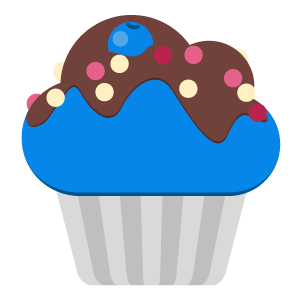

О приложении

Разработано Blue Muffin
 По заказу SJmarket
Сайт
По заказу SJmarket
Сайт
Сообщить об ошибке
Предложить идею
Написать
Отдельная благодарность
Выражаем благодарность пользователям форума 4PDA за публикацию команд, что послужило идеей для
создания приложения: Dimka_Piter, bildin
Версия: {{ appVersionNumber }}
Расширенный режим